time <- c("Fri, Sept 22", "Sat, Sept 23", "Sun, Sept 24")5 Causality with Non-Experimental Data
In this section, we continue to evaluate causal claims, but this time we will not have the benefit of experiments.
Recall: Why do we use experiments?
We want to evaluate causal claims:
- Does manipulating one factor (a “treatment”) cause a change in an outcome? (\(Y_i(1) - Y_i(0)\))
- But we have a problem: the fundamental problem of causal inference
- (Can’t simultaneously both be treated and untreated - e.g., you can’t simultaneously be contacted and not contacted by a campaign)
- So instead, we randomly assign some units to receive a treatment, and some not to, and then compare their average outcomes in an experiment
And because of random assignment of the treatment, we can be confident that the groups are similar EXCEPT for the treatment
- Therefore, any difference between the two groups in average outcomes can be attributed to the treatment
But what if we can’t randomize the treatment?
5.1 Why can’t we always experiment?
Example: Do political leaders tend to matter for democracy?
- Our outcome: how democratic nations are
- Our causal effect of interest:
- On average, how democratic nations are with their current leaders -
- On average, how democratic nations would be with different leaders
- Possible Experimental Designs to randomly assign half of countries to receive a different political leader
- Rig elections (I.e., Election fraud- Illegal, unethical)
- Forcibly remove half from office (Probably illegal)
- Assassinations (Illegal, Immoral, Unethical, etc.)
Again, we have problems!!
5.1.1 What can we do instead?
Let’s say we want to make a causal claim about the effect of one variable on an outcome, but we can’t think of an experimental design that will help us estimate this.

What do you do?
5.2 Causal Identification Strategies
Our goal: Try to “identify” the causal effect of one variable on an outcome. As Montell Jordan once said, this is how we do it:
- Use data we have (that exist out in the world)
- Compare those who are “treated” to a relevant comparison group who is not treated
However, we can’t randomize treatment so….
- We do our best to try to choose a good comparison (one very similar to the treatment group, but happens not to be treated)
We want to rule out all possible confounding variables and “alternative explanations” for the outcomes we observed.
5.2.1 Example: Travis Kelce Jersey Sale and Instagram Gains
In fall 2023, why did Travis Kelce experience an increase in social media followers?
- Let’s use the
plot()function to visualize this- Kelce saw an increase in followers on Fri, Sept 22 of 8786
- Kelce saw an increase in followers on Sat, Sept 23 of 7242
- Kelce saw an increase in followers on Sun, Sept 24 of 27249
- When visualizing a trend, we put time on the x-axis
- We put the values of the outcome on the y-axis
followers <- c(8786, 7242, 27249)5.2.1.1 Line Plots
To make it a line plot, we add type = "l" or type = "b".
- Note: Because our time is text-based, we cannot add it to the plot directly. Instead, we use a placeholder
1:length(time). - Instead, we add
xaxt="n"to remove the default x-axis and addaxis()below the plot code to add our own custom axis. By adding the “1”, we are indicating it should be drawn on the x-axis
plot(x=1:length(time), y=followers,
type="b",
main = "Travis Kelce Instagram Follower Gains over Time",
ylab="Instagram Follower Gains",
xlab="Date",
xaxt="n",
las=2, cex.axis=.8)
axis(1, at=1:length(time), labels=time, cex.axis=.8)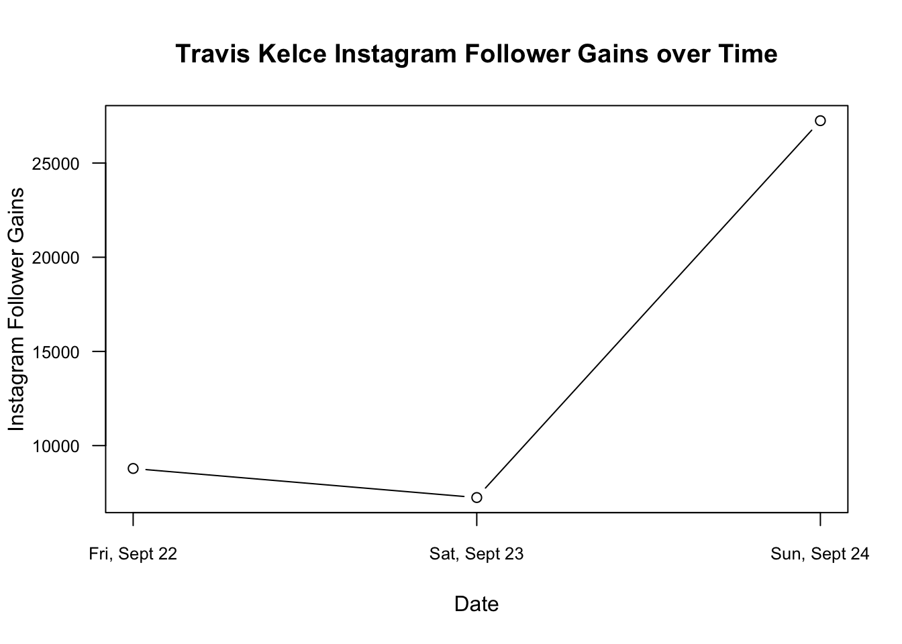
YOUR TURN: Make a causal claim about the increase in Kelce’s followers
- What is the outcome? the number of followers
- What is the treatment? what do you think caused the increase
- What are the two counterfactual states of the world under treatment vs. not under treatment?
Is this a Taylor Swift effect?
- How could we prove it? What are possible confounders?
- Maybe it’s just the effect of playing a game on Sunday?
- Maybe all NFL players experienced a similar increase?
- Maybe Kelce had a particularly good game relative to other players?
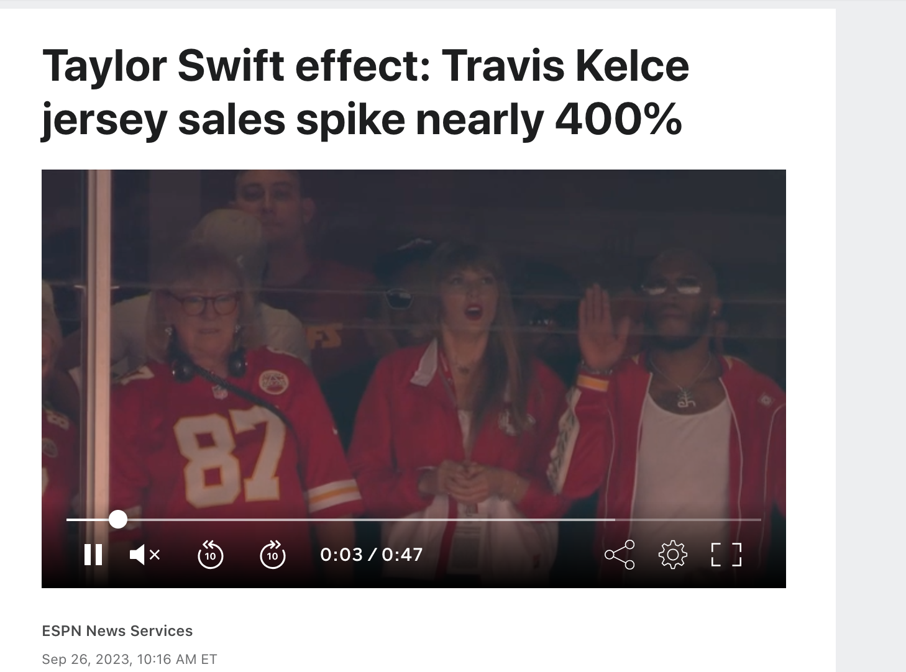
5.2.2 Example: Social Mobility Data
Since the onset of the pandemic in 2020, researchers have evaluated attitudinal and behavioral responses to policy changes, political messages, and COVID case/hospitalization/death rates.
- Survey data on attitudes and self-reported behavior
- Health care provider administrative data
- Mobile phone data to track locations
- Social media data to track attitudes and mobility
Example: Using Survey data from over 1.1 million responses to measure concern about the coronavirus over time.
- Clinton, Joshua, et al. “Partisan pandemic: How partisanship and public health concerns affect individuals’ social mobility during COVID-19.” Science advances 7.2 (2021): eabd7204.

Example: Using the geotracking data of 15 million smartphones per day to compute percentage reduction in general movement and visiting non-essential services relative to before COVID-19 (before March 9).
- Gollwitzer, Anton, et al. “Partisan differences in physical distancing are linked to health outcomes during the COVID-19 pandemic.” Nature human behaviour 4.11 (2020): 1186-1197.
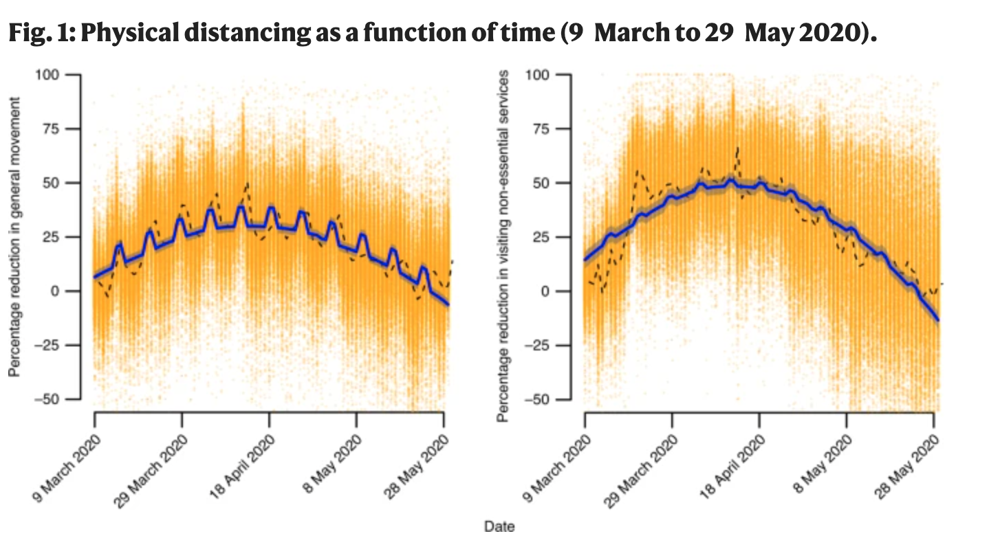
Example: Using Twitter geolocation data to track how much movement users have by looking at the distances from all locations where a given user has tweeted.
- Paiheng Xu, Mark Dredze, David A Broniatowski. “The Twitter Social Mobility Index: Measuring Social Distancing Practices from Geolocated Tweets.” Journal of Medical Internet Research (JMIR), 2020.

We will use the Twitter social mobility index to study how the movement of geo-located Twitter users changed from 2019 into April 2022.
- We will compare this movement for users located in the Northeast vs. South
Each row of the dataset represents a week of the year. Each column represents a particular geography for which social mobility was calculated by the researchers.
Datesindicates the dateNortheast: social mobility data for those in the northeast of the U.S.South: social mobility data for those in the south of the U.S.
## Load the data from the author Mark Dredze's website
covid <- read.csv("https://raw.githubusercontent.com/mdredze/covid19_social_mobility.github.io/master/data/longitudinal_compiled.csv")Just like we have encountered numeric, factor, and character variables, R also has the ability to treat variables specifically as dates. We will want R to treat the date variable we read in as a date, and not as raw text or some other variable type. To do this, we will use the as.Date function.
## Date variable original format and class
head(covid$Dates)[1] "2019-01-01" "2019-01-07" "2019-01-14" "2019-01-21" "2019-01-28"
[6] "2019-02-04"class(covid$Dates)[1] "character"## Convert to class Date
covid$Dates <- as.Date(covid$Date)
head(covid$Dates)[1] "2019-01-01" "2019-01-07" "2019-01-14" "2019-01-21" "2019-01-28"
[6] "2019-02-04"class(covid$Dates)[1] "Date"The researchers continue to add to these data. Let’s look at the portion of data from 2019 to April 2022.
- Note the use of
as.Dateagain to make sure R knows our text should be treated as a date - Note the use of the greater than or equal to
>=and less than or equal signs<=to specify which rows we want to keep in the data. We want rows that are in dates after January 1, 2019 and (&) on or before April 25, 2022.
covidsub <- subset(covid, Dates >= as.Date("2019-01-01") &
Dates <= as.Date("2022-04-25"))These data are collected by week. That is very detailed. While that may be useful, let us create another variable that contains just the month and year, which will allow us to calculate the average per month. With a date variable, we can use the format function to change the format to just year and month.
covidsub$monthyear <- format(covidsub$Dates, "%Y-%m")
range(covidsub$monthyear)[1] "2019-01" "2022-04"Where we are going …
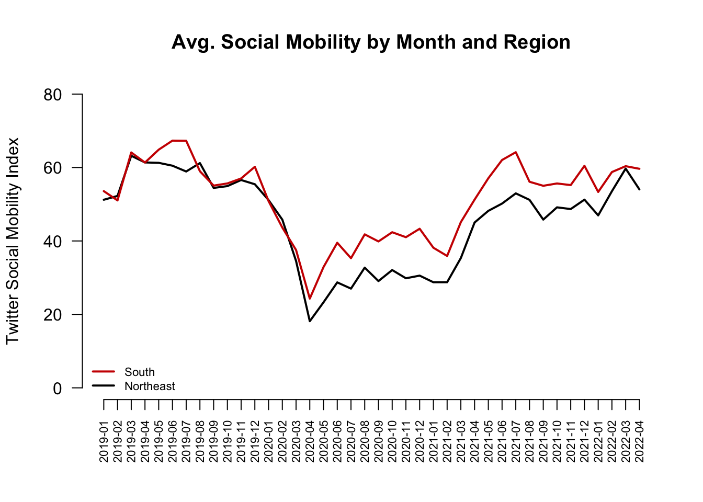
Starting from the bottom …
- Let’s first create a scatterplot by providing R with our two variables
- In a trend/line plot, we want each month on the x-axis
- We want our outcome on the y-axis, in this case, average social mobility by month
- Ultimately we will want to compare the Northeast with the South. We will plot one line at a time, starting with the Northeast
We first need to find the average by month. Recall our tapply() function.
mobilitybymonthNE <- tapply(covidsub$Northeast, covidsub$monthyear, mean,
na.rm=T)
mobilitybymonthSO <- tapply(covidsub$South, covidsub$monthyear, mean,
na.rm=T)Let’s look at the output for the Northeast. Each value is what we ultimately want on the y-axis– the average social mobility in a given month.
mobilitybymonthNE 2019-01 2019-02 2019-03 2019-04 2019-05 2019-06 2019-07 2019-08
51.22066 52.26420 63.20130 61.38417 61.27622 60.49753 58.91779 61.20730
2019-09 2019-10 2019-11 2019-12 2020-01 2020-02 2020-03 2020-04
54.44546 54.93814 56.59830 55.44538 51.12414 45.80660 34.55917 18.15076
2020-05 2020-06 2020-07 2020-08 2020-09 2020-10 2020-11 2020-12
23.29190 28.71901 27.02149 32.73828 29.07536 32.07877 29.83641 30.56208
2021-01 2021-02 2021-03 2021-04 2021-05 2021-06 2021-07 2021-08
28.75507 28.76227 35.35340 45.02537 48.19897 50.18401 52.96105 51.19241
2021-09 2021-10 2021-11 2021-12 2022-01 2022-02 2022-03 2022-04
45.81695 49.15654 48.69051 51.24941 46.96813 53.55241 59.70933 54.04312 We want to plot them each at their own point on the x-axis, from the first month to the last month. We can start by creating a vector of the same length as we have months:
1:length(mobilitybymonthNE) [1] 1 2 3 4 5 6 7 8 9 10 11 12 13 14 15 16 17 18 19 20 21 22 23 24 25
[26] 26 27 28 29 30 31 32 33 34 35 36 37 38 39 40These become our two inputs in the plot.
plot(x=1:length(mobilitybymonthNE),
y=mobilitybymonthNE, pch=16) # pch is point type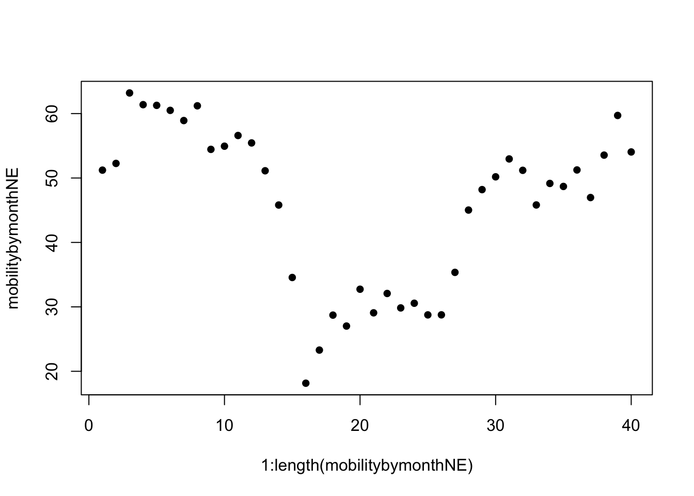
We now transform it to a line by specifying type="l"
- By default, R creates a plot with
type=pfor points. R also hastype=bwhich has both a line and points.
plot(x=1:length(mobilitybymonthNE),
y=mobilitybymonthNE, type="l") # makes it a line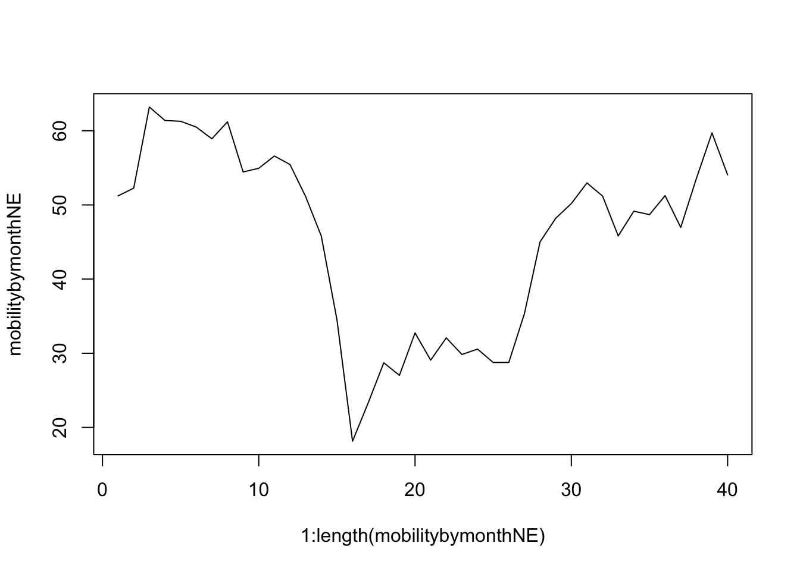
Let us change the aesthetics a bit by adding labels and removing the border with bty="n".
plot(x=1:length(mobilitybymonthNE),
y=mobilitybymonthNE,
type="l",
main="Social Mobility by Month and Region",
ylab="Twitter Social Mobility Index",
xlab="",
ylim = c(0, 80), # y-axis limits
las=1, # orientation of axis labels
lwd=2, # line width
bty="n") # removes border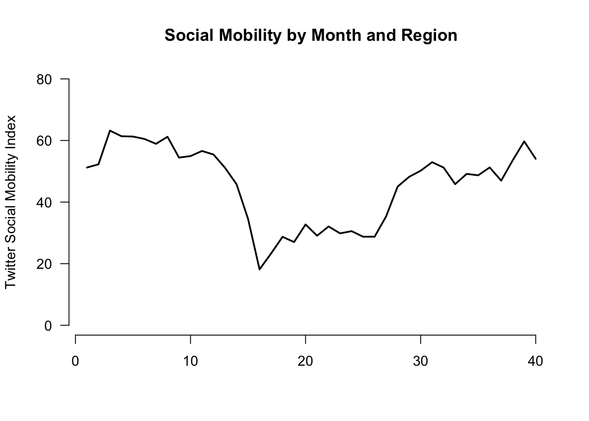
Let’s add a comparison line with the lines() function to look at trends for the south.
- Note that this is outside of the
plot()function, but the inputs are very similar. We supply a set of x and y coordindates.
plot(x=1:length(mobilitybymonthNE),
y=mobilitybymonthNE,
type="l",
main="Social Mobility by Month and Region",
ylab="Twitter Social Mobility Index",
xlab="",
ylim = c(0, 80), # y-axis limits
las=1, # orientation of axis labels
lwd=2, # line width
bty="n") # removes border
## Add line to the plot
lines(x=1:length(mobilitybymonthSO),
y=mobilitybymonthSO, col="red3", lwd=2)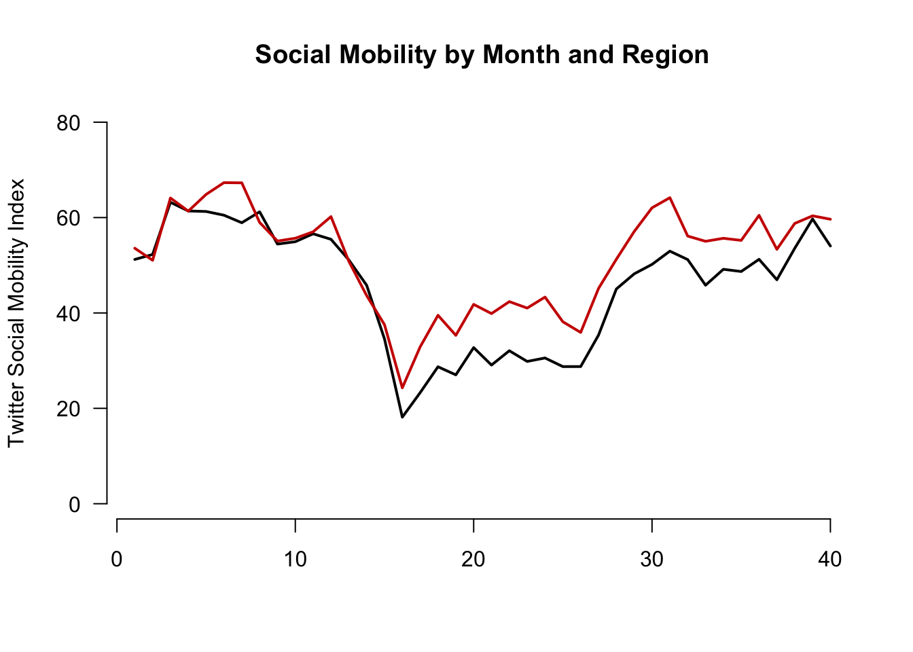
Let’s create our own axis for the plot to add detail. To do this, we add xaxt to the plot function and then use axis() below the function.
The labels we will add are the actual months in the data. These happen to be the labels or names of our vectors:
names(mobilitybymonthNE) [1] "2019-01" "2019-02" "2019-03" "2019-04" "2019-05" "2019-06" "2019-07"
[8] "2019-08" "2019-09" "2019-10" "2019-11" "2019-12" "2020-01" "2020-02"
[15] "2020-03" "2020-04" "2020-05" "2020-06" "2020-07" "2020-08" "2020-09"
[22] "2020-10" "2020-11" "2020-12" "2021-01" "2021-02" "2021-03" "2021-04"
[29] "2021-05" "2021-06" "2021-07" "2021-08" "2021-09" "2021-10" "2021-11"
[36] "2021-12" "2022-01" "2022-02" "2022-03" "2022-04"plot(x=1:length(mobilitybymonthNE),
y=mobilitybymonthNE,
type="l",
main="Social Mobility by Month and Region",
ylab="Twitter Social Mobility Index",
xlab="",
ylim = c(0, 80),
las=1,
lwd=2,
bty="n",
xaxt="n") # removes original x-axis
## Add line to the plot
lines(x=1:length(mobilitybymonthSO),
y=mobilitybymonthSO, col="red3", lwd=2)
## add the axis the "1" means x-axis. A "2" would create a y-axis
axis(1, at = 1:length(mobilitybymonthNE),
labels=names(mobilitybymonthNE), las=2)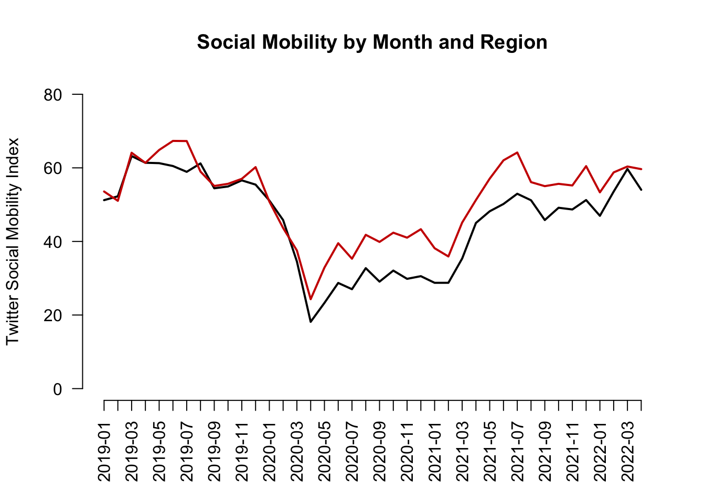
Finally, let’s add a legend(). Now we’re here!
plot(x=1:length(mobilitybymonthNE),
y=mobilitybymonthNE,
type="l",
main="Social Mobility by Month and Region",
ylab="Twitter Social Mobility Index",
xlab="",
ylim = c(0, 80),
las=1,
lwd=2,
bty="n",
xaxt="n") # removes original x-axis
## Add line to the plot
lines(x=1:length(mobilitybymonthSO),
y=mobilitybymonthSO, col="red3", lwd=2)
## add the axis the "1" means x-axis. A "2" would create a y-axis
axis(1, at = 1:length(mobilitybymonthNE),
labels=names(mobilitybymonthNE), las=2)
## Add legend, "bottomleft" indicates where on the plot to locate it
## Could use "topright" instead, for example
legend("bottomleft", col=c("red3", "black"),
c("South", "Northeast"),
cex = .7, # size of legend
lwd=2,
bty="n")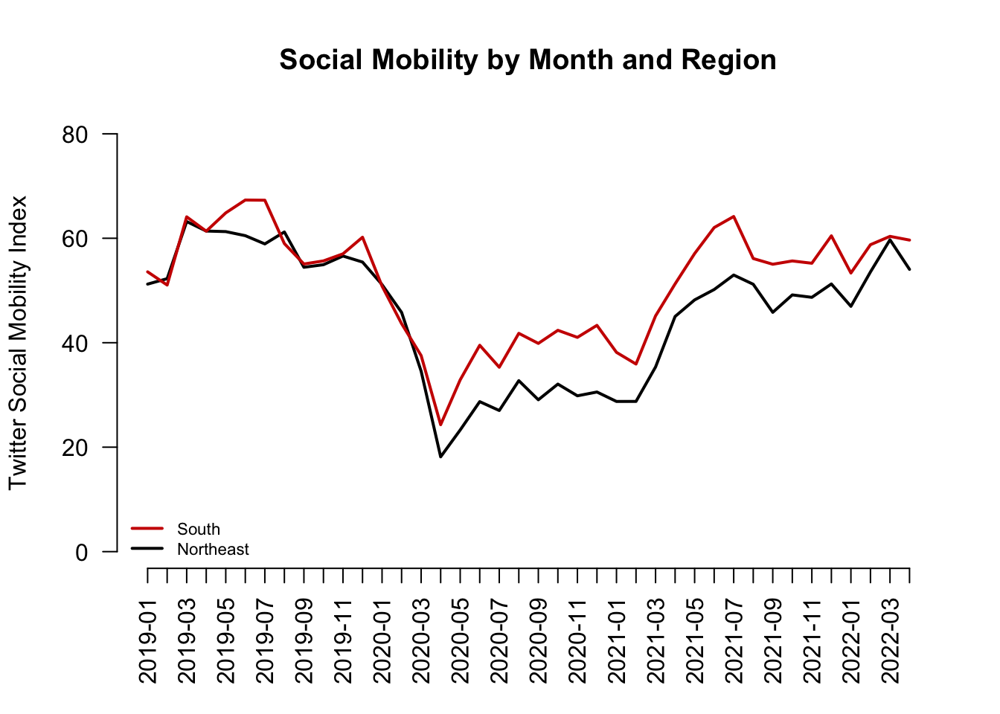
5.2.3 Causal claims from before vs. after comparisons
What types of research questions could these trends generate?

What would you want to know about how movement has changed over time. Think about examples of causal claims you might make:
- Example: X caused mobility to decline
- Example: Z caused mobility to decrease
- Example: W caused mobility to increase at different rates across different regions.
So what can we do to test causal claims?
- What is the fundamental problem of causal inference in this case?
- Can we do an experiment?
- Researchers try to form comparison groups, in a strategic way, with the data they have (i.e., “observational” or “non-experimental” data).
- Because they cannot randomly assign two different experiences of the world, instead they choose two cases or two groups of cases that
- Seem extremely similar except
- One has the treatment of interest, and one does not
Example: Before vs. After Comparison
Let’s examine social mobility just before vs. just after the federal announcement of social distancing guidelines to stop the spread of COVID-19.
- To do so, we will draw a vertical line at March 2020
- Note we use
abline(v=)to indicate a vertical line at a location to cross the x-axis
- Note we use
This is the 15th entry in our vector, which means at point 15 on the x-axis.
mobilitybymonthNE["2020-03"] 2020-03
34.55917 mobilitybymonthNE[15] 2020-03
34.55917 - We will also add text to inform views what that line represents
- Note we use
text(x= , y=, labels)to indicate where to put text
- Note we use
plot(x=1:length(mobilitybymonthNE),
y=mobilitybymonthNE,
type="l",
main="Social Mobility by Month and Region",
ylab="Twitter Social Mobility Index",
xlab="",
ylim = c(0, 80),
las=1,
lwd=2,
bty="n",
xaxt="n") # removes original x-axis
## Add line to the plot
lines(x=1:length(mobilitybymonthSO),
y=mobilitybymonthSO, col="red3", lwd=2)
## add the axis the "1" means x-axis. A "2" would create a y-axis
axis(1, at = 1:length(mobilitybymonthNE),
labels=names(mobilitybymonthNE), las=2)
## add dashed blue vertical line
abline(v=15, lty=2, col="dodgerblue", lwd=1.5)
## add text near the line
## the \n breaks the text into different lines
text(x=15, y=65, labels = "Federal \n Announcement", cex=.6)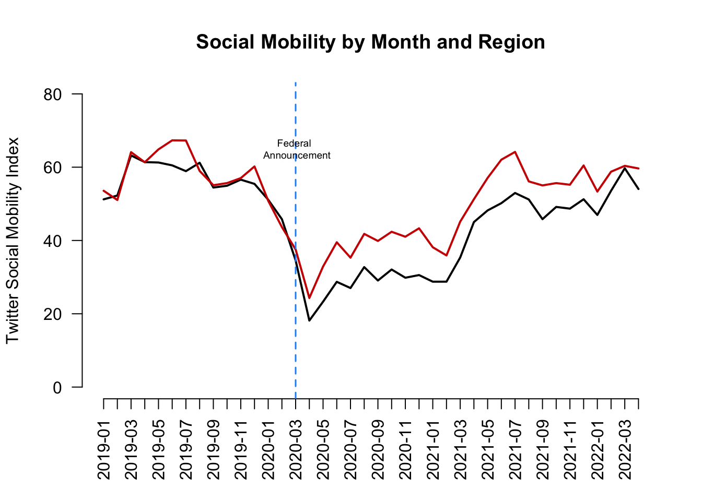
We see mobility does appear to be lower after the announcement relative to before the announcement. Is this causal?
- Assumption: We would want to be able to argue that social mobility in the weeks following the announcement (after time period) would look similar to social mobility in the weeks prior to the announcement (before period) if not for the federal announcement
- That the before vs. after time periods would be similar in any meaningful way if not for the presence of the treatment in the after period.
Does this seem like a plausible argument? Could other things (confounders) occurring around the time of the federal announcement also have caused the steep decline in social mobility?
- If we think something else happened around the same time that might have caused mobility to go down anyway, then we may be doubtful that this is a causal effect.
5.3 Three Common Identification Strategies
Example: Does drinking Sprite make a person a better basketball player? (Inspired by 1990s commercial where a kid believes drinking Sprite will cause him to play basketball better.)
- Cross-section comparison: Compare Grant Hill (who drinks Sprite) to others (who don’t)
- Before-and-after: Compare Grant Hill after he started drinking Sprite to Grant Hill before
- Difference-in-differences: Compare Grant Hill before and after drinking Sprite and subtract from this the difference for some other person (who never drank Sprite) during the same two periods
(Note: “drinking Sprite” is our treatment.)
5.3.1 Threats to Cross-Section Designs
Assumption: Must assume no confounders and any alternative explanations related to differences between the treated and control subjects that also relate to the outcome. The Threat: Your two groups may differ in ways beyond the “treatment” in ways that are relevant to the outcome you care about.
- Compare Grant Hill, a tall NBA player who currently drinks Sprite (treatment group) to
- Yourself, assuming you and they do not drink Sprite (control group)
- Compare your basketball skill levels (the outcome).
- Suppose Grant Hill is better (a positive treatment effect).
- Can we conclude Sprite causes a person to be a better player?
Nope, because other things that affect basketball talent differ between you and Grant Hill, and these things, not Sprite, may explain the difference in basketball talent.
Moreover, even if we compared just among NBA players (Grant Hill vs. non-Sprite drinking players of his era), it’s possible that Sprite targeted all-stars to recruit to drink Sprite. In this way, pre-existing basketball talent (a confounder) both explains why Grant Hill drank Sprite (relates to the treatment) and explains his higher level of basketball talent (relates to the outcome) in the time period after drinking Sprite.
- For a cross-sectional comparison to be plausible, we need to choose a very similar comparison in order to isolate the treatment as the main variable that is causing a change in an outcome.
5.3.2 Threats to Before-After Designs
Assumption: Must assume no confounding time trend. Threat: Something else may be changing over time, aside from the treatment, that is affecting your outcome.
- Compare Grant Hill in the years after he started drinking Sprite (treated) to
- Grant Hill the years before he started drinking Sprite (control)
- Compare his basketball skill levels (outcome).
- Suppose Grant Hill after Sprite is better (a positive treatment effect).
- Can we conclude Sprite causes a person to be a better player?
Not if something else Grant Hill started doing during that time period made him better (e.g., maybe during that time the NBA provided higher quality coaches and trainers, and everyone (including Grant Hill) got better).
- You want your treatment to be the only thing relevant to basketball talent changing over time.
5.3.3 Threats to Diff-in-Diff Designs
Assumption: Must assume parallel trends: That in the absence of treatment, your treatment group would have changed in the same way as your control
- Compare Grant Hill in the years before vs. after he started drinking Sprite to Grant Hill’s teammate, who never drank sprite, in the same two time periods (before Hill drinks Sprite vs. after Hill drinks Sprite)
- Compare the change in each player’s basketball skill levels. Suppose Grant Hill’s skills increased to a greater degree than his teammate’s over the same time period.
- Can we conclude Sprite causes a person to be a better player?
If we are confident that Grant Hill did not have a unique (non-Sprite) advantage over that time period relative to other players, then our assumption might be plausible– that Grant Hill and other players would have experienced a similar growth in their skills if not for Grant Hill getting the extra benefit of Sprite.
Instead, if, for example, Grant Hill got a new trainer during this period AND his teammate did not, then we might have expected Grant Hill to see more improvement even if he didn’t start drinking Sprite. A violation of the parallel trends assumption!
- Causality is hard!
5.4 Application: Economic Effects of Basque Terrorism
Research Question: What is the economic impact of terrorism?
- Factual (\(Y(1)\)): Economy given Basque region hit with terrorism in early 1970s
- From 1973 to late 1990s, ETA killed almost 800 people
- Activity localized to Basque area
- Counterfactual (\(Y(0)\)): How would Basque economy have fared in the absence of the terrorism?
- Basque was the 3rd richest region in Spain at onset
- Dropped to the 6th position by late 1990s
- Would this fall have happened in the absence of terrorism?
Problem: We can’t observe the counterfactual. We can’t go back in time to manipulate the experience of terrorism.
5.4.1 Applying 3 Identification Strategies
- Compare Basque to others after 1973 (Cross-section comparison)
- Compare Basque before and after 1973 (Before-and-after)
- Compare others before and after 1973 and subtract the difference from Basque’s difference (Difference-in-differences)
For a video explainer of the code for this application, see below. (Via youtube, you can speed up the playback to 1.5 or 2x speed.)
basque <- read.csv("basque.csv")head(basque) region year gdpcap
1 Andalucia 1955 1.688732
2 Andalucia 1956 1.758498
3 Andalucia 1957 1.827621
4 Andalucia 1958 1.852756
5 Andalucia 1959 1.878035
6 Andalucia 1960 2.010140Variables
region: 17 regions including Basqueyear: 1955 – 1997gdpcap: real GDP per capita (in 1986 USD, thousands)
Subset Basque Data into Four Groups
## Basque before terrorism
basqueBefore <- subset(basque, (year < 1973) &
(region == "Basque Country"))
## Basque after terrorism
basqueAfter <- subset(basque, (year >= 1973) &
(region == "Basque Country"))
## others before terrorism
othersBefore <- subset(basque, (year < 1973) &
(region != "Basque Country"))
## others after terrorism
othersAfter <- subset(basque, (year >= 1973) &
(region != "Basque Country"))What is the economic impact of terrorism?
Cross-section comparison
mean(basqueAfter$gdpcap) - mean(othersAfter$gdpcap)[1] 1.132917Before-and-after design
mean(basqueAfter$gdpcap) - mean(basqueBefore$gdpcap)[1] 2.678146Difference-in-Differences design
treatDiff <- mean(basqueAfter$gdpcap) -
mean(basqueBefore$gdpcap)
controlDiff <- mean(othersAfter$gdpcap) -
mean(othersBefore$gdpcap)
treatDiff - controlDiff[1] -0.48316Here is a way to visualize this difference-in-differences. Our estimated causal effect is the difference between the observed post-1973 economy in the Basque region mean(basqueAfter$gdpcap) and what we assume the economy would have been in the absence of terrorism (the treatment) using the dotted line– adding the control group’s trajectory to the pre-1973 Basque economy (mean(basqueBefore$gdpcap) + controlDiff).
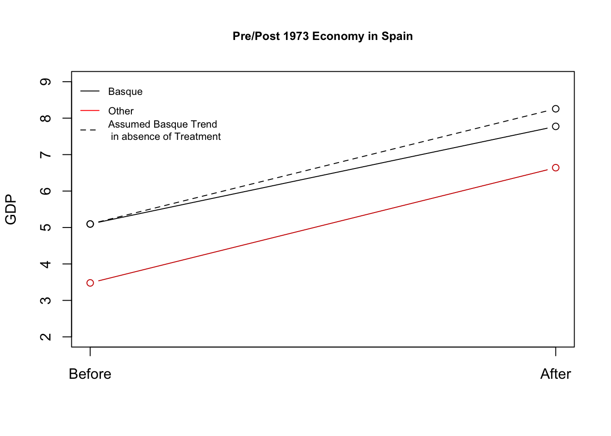
What should we conclude from each approach?
- Each approach resulted in a different estimate of the impact of terrorism on the economy. We should choose the approach for which we think the underlying assumptions are most plausible.
5.5 Placebo Tests
Which Results Should We Believe? Role of Placebo Tests
Cross-section comparison
## were there pre-existing differences between the groups?
mean(basqueBefore$gdpcap) - mean(othersBefore$gdpcap)[1] 1.616077Before-and-After design
## was there a change in a group we don't think should have changed?
mean(othersAfter$gdpcap) - mean(othersBefore$gdpcap)[1] 3.161306What about the Difference-in-Differences design?
## here we go back in time even further to examine "pre-treatment" trends
## we want them to be similar
(basqueBefore$gdpcap[basqueBefore$year == 1972] -
basqueBefore$gdpcap[basqueBefore$year == 1955]) -
(mean(othersBefore$gdpcap[othersBefore$year == 1972]) -
mean(othersBefore$gdpcap[othersBefore$year == 1955]))[1] 0.07147071These “placebo” checks are closest to zero for diff-in-diff, so we may believe that the most.
Thanks to Will Lowe and QSS for providing the foundations for this example
5.6 Wrapping Up Causality
Do you get this joke?